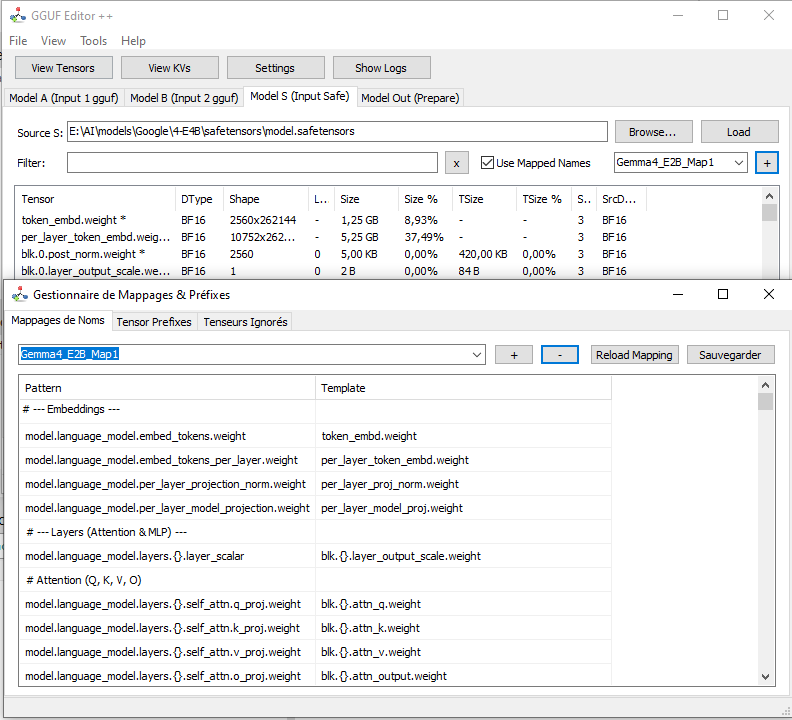

Características Detalladas
1. Edición y Fusión de Modelos
La herramienta permite cargar hasta tres fuentes de modelos simultáneamente:
- Modelo A (GGUF): Modelo base.
- Modelo B (GGUF): Segundo modelo para fusión (merging).
- Modelo S (Safetensors): Integración de pesos de PyTorch.
Puedes transferir tensores específicos o por capas (todos los "blks", o capas impares/pares) al modelo de salida.
2. Visualización y Análisis
Accede a la vista "Tensores" para inspeccionar el interior de tus modelos.
- Series Temporales (Gráficos): Visualiza los valores float a lo largo de un tensor. Detecta anomalías y valores atípicos (outliers).
- Comparación (T1 - T2): Resta dos tensores para ver la diferencia (útil para el análisis de fusión).
- Histogramas: Analiza la distribución de los pesos (normal, gaussiano, etc.).

3. Mapeo de Nombres

El motor de mapeo permite renombrar automáticamente los tensores para adaptar un modelo a una arquitectura objetivo.
- Soporte para patrones genéricos (ej. `blk.{}.attn.weight`).
- Archivos de configuración externos (.txt).
- Gestión de prefijos ignorados.
4. Cuantización Inteligente
Conversión de tipos de tensores en tiempo real:
- DLL Llama.cpp: Uso de bibliotecas nativas para una descuantización de alta fidelidad (RMSE minimizado).
- Modo Impl: Algoritmo de software alternativo para una estabilidad máxima o cuando la DLL no está disponible.
- Simulación de cuantización: Ver cómo se vería un tensor FP32 convertido a Q4_K sin escribirlo.
5. División y Fusión (Split and Merge)
Herramientas integradas para:
- Split (Dividir): Dividir un modelo GGUF grande en varios archivos (ej. 4GB).
- Merge (Fusionar): Recombinar varios shards GGUF en un solo archivo coherente.